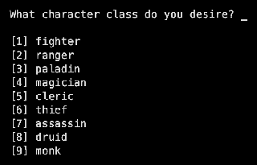
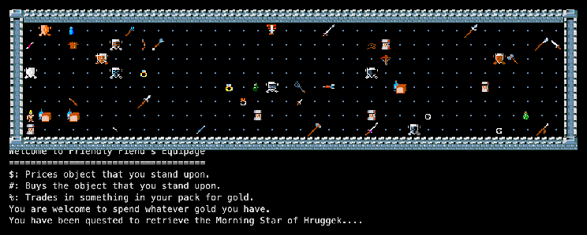
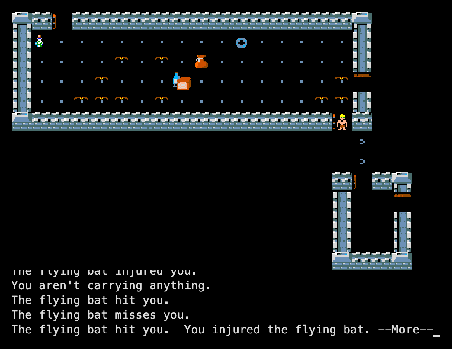
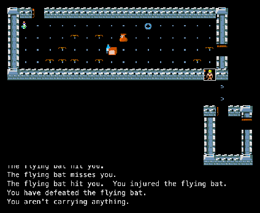

XRogue is based on Advanced Rogue 7.7 (and through it Super-Rogue and Rogue 3.6). Robert Pietkivitch wrote it between 1989 and 1992 for the AT&T UNIX PC. His later enhancements from 2000 were lost after his death in 2002; the Roguelike Restoration Project kept 8.0.3, and a new maintainer released 8.0.5 in 2015. See the family tree.
Credits
Robert Pietkivitch
Author (copyright 1991)
Michael Morgan, Ken Dalka
Advanced Rogue
Michael Toy, Ken Arnold, Glenn Wichman
Rogue
Roguelike Restoration Project
Kept and maintained 8.0.3
Screenshots

The start: nine classes, then points for six abilities.

First steps: Friendly Fiend’s Equipage, and the quest (here the Morning Star of Hruggek).

A fight: a flock of flying bats in the first room.

Inventory: an XRogue hero starts with gold, not gear — “You aren’t carrying anything.” Shop first!
Trivia
Pietkivitch wrote XRogue for the AT&T UNIX PC between 1989 and 1992. (RogueBasin)
His enhanced version from 2000 was lost after he died in 2002; version 8.0.5 came out in 2015 from a new maintainer. (RogueBasin)
The README admits it: “I’m afraid there is little documentation for this version.” (source: README.TXT)
While you are still in the first trading post you can press A and pick your own quest relic. After that: “You can no longer select a quest item.” (source: wizard.c, command.c)
XRogue adds a 17th relic to Advanced Rogue's list: the Card of Alteran. (source)
What's unique
Nine classes with spells, prayers and chants (16 of each).
211 monsters, far more than Advanced Rogue 7.7.
Shop first: you start with gold and an empty pack, and choose your own gear.
A quest you can choose and must carry back to the surface.
Code dive
Language: C, about 36,500 lines, grown from the Advanced Rogue 7.7 code.
Environment: the AT&T UNIX PC (3B1) with curses; later DOS, Windows and Linux.
This port:explore.c adds auto-explore and stair-walking; X11 and WebAssembly frontends. Source: memmaker/xrogue.
Everything from Advanced Rogue plus the Card of Alteran.
Potions
18
Scrolls
20
Rings
26
Wands & staffs
20
Weapons
19
Armour
10
Manual
No manual exists for XRogue; its README says so. The Advanced Rogue guide mostly applies: Advanced Rogue 7.7 manual. The in-game help (?) lists XRogue’s own commands.
Getting started
Open the game, choose a class, press Escape at the ability points, then y.
You are in a trading post with gold and nothing else. Stand on an item: $ prices, # buys. Get armour and a weapon.
Optional: A chooses your quest relic.
> leaves for the dungeon; x explores; Enter lists every command.